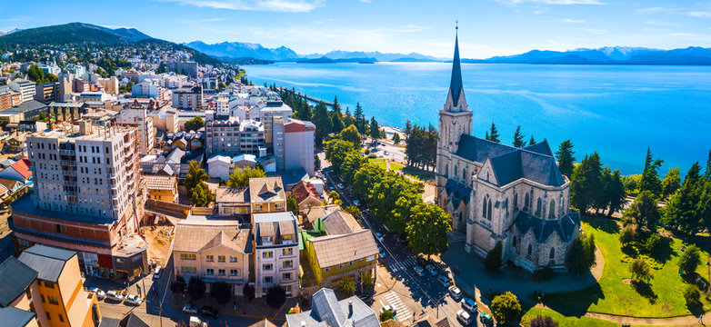
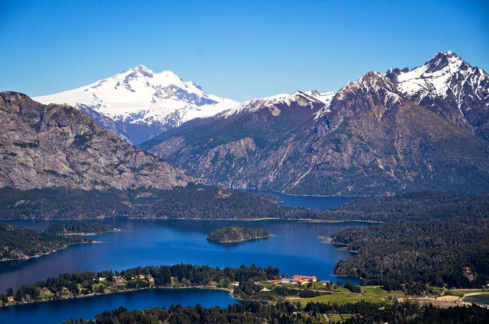
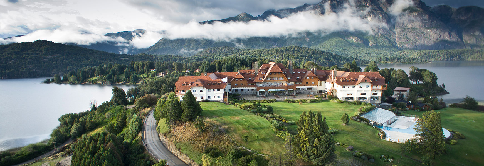
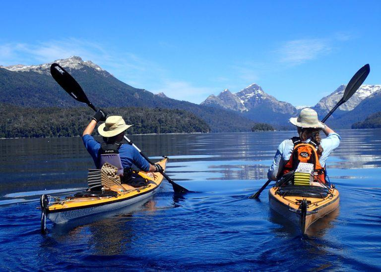
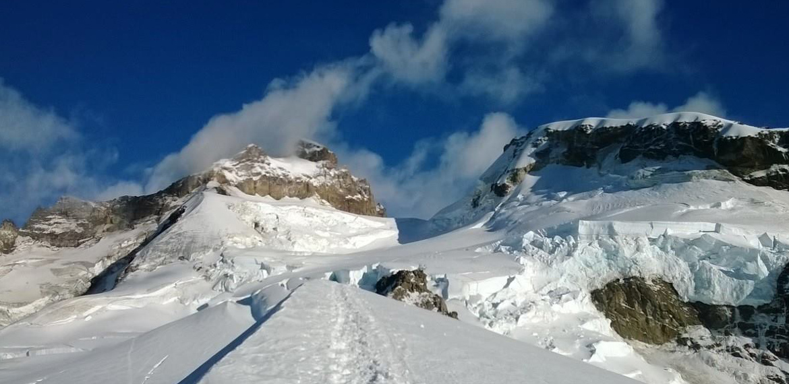

Sur Global, principio de todo.

À beira do lago Nahuel Huapi, cercada por vulcões e florestas de lenga que se incendeiam nas cores do outono, San Carlos de Bariloche é o destino mais visitado da Patagônia argentina. Capital do chocolate artesanal, do esqui austral e do trekking de alta montanha, a cidade combina uma arquitetura alpina surpreendente com uma natureza sem peias. Não importa a estação do ano: Bariloche sempre tem algo a oferecer.

Bariloche do alto: a cidade, o lago Nahuel Huapi e o cenário permanente dos Andes.
Povos mapuche e tehuelche habitaram esta região por milênios antes de qualquer europeu cruzar os Andes. O lago Nahuel Huapi — "Ilha do Tigre" em mapudungun — era território dos puelches e pehuenches, que cruzavam a cordilheira seguindo rotas de comércio e conflito. Os jesuítas tentaram estabelecer missões no século XVII; a mais célebre, do Padre Mascardi, foi destruída pelos próprios indígenas em 1717 após décadas de tensão.
A história moderna começa em 1895, quando o perito Francisco Pascasio Moreno — que já tinha cruzado o lago de canoa e daria seu nome ao famoso glaciar — doou ao Estado argentino três léguas quadradas de terra à beira do Nahuel Huapi. Tornou-se a primeira reserva natural do país e a semente do parque nacional que hoje cerca a cidade. Carlos Wiederhold, comerciante alemão, abriu o primeiro armazém geral no mesmo ano. A cidade cresceu desse armazém. O nome oficial, "San Carlos de Bariloche", mistura o patrono cristão com a deformação do topônimo indígena vuriloche: "povo do outro lado das montanhas".
A chegada da ferrovia Viedma–Bariloche em 1934 transformou a aldeia em destino turístico. O arquiteto Alejandro Bustillo projetou o Centro Cívico, o Hotel Llao Llao e vários outros marcos em pedra vulcânica local e madeira de cipreste — uma estética que definiu para sempre a identidade visual da cidade. A imigração centro-europeia do século XX — alemães, suíços, austríacos — trouxe o chocolate artesanal, a arquitetura de montanha e a cultura do chá. Hoje Bariloche produz mais de 70% do chocolate fino da Argentina.
Cerro Catedral coberto. A melhor época para esqui e snowboard na maior estação da América do Sul. Alta temporada: reserve com meses de antecedência.
Trekking, caiaque e praias de lago. Dias longos, temperatura média de 20°C. Ideal para o Circuito Chico, o Cerro López e as trilhas do parque nacional.
As lengas e ñires ficam vermelhas e laranja. Menos turistas, preços mais baixos e a luz mais fotogênica do ano. A estação secreta de Bariloche.
Voos diretos de Buenos Aires (2 h), Córdoba, Mendoza e outras cidades. O aeroporto Teniente Luis Candelaria fica a 15 km do centro — táxi, remis ou ônibus urbano linha 72.
De Buenos Aires: 20 h em coche cama. De Neuquén: 5 h. De Esquel: 4 h pela Rota 40. O terminal fica a poucas quadras do Centro Cívico.
O famoso Cruce de Lagos Bariloche–Puerto Montt: dois dias de ônibus e catamarã cruzando lagos e vulcões na fronteira. Uma experiência em si mesma.
A mítica estrada patagônica passa por Bariloche. De norte ou sul, a chegada pela Rota 40 é um dos percursos rodoviários mais espetaculares do continente.

A maior estação de esqui da América do Sul, a 19 km do centro. Mais de 120 km de pistas, 37 meios de elevação e uma vila de montanha com restaurantes e hotéis na base. A temporada vai de junho a outubro. As vistas do topo — o lago Nahuel Huapi de um lado, o vulcão Tronador do outro — são únicas no mundo. No verão, os teleféricos abrem para caminhantes e ciclistas.

O trekking mais acessível e mais espetacular de Bariloche. Saída da cidade, subida de 3 a 4 horas até o refúgio a 1.600 m acima do nível do mar. O panorama do topo — o Nahuel Huapi com 560 km² abaixo — é um dos mais fotografados da Patagônia. O refúgio oferece comida e hospedagem: para quem quiser ver o amanhecer sobre o lago, passar a noite vale cada centavo.

O passeio clássico de Bariloche: 65 km de carro ou bicicleta margeando o lago Nahuel Huapi passando pelo Cerro Campanario (mirante obrigatório), Hotel Llao Llao, Puerto Pañuelo e Bahía López. O Campanario se sobe de teleférico em 10 minutos e entrega uma das melhores vistas panorâmicas da região. Faça ao pôr do sol para duplicar o efeito.

O mais antigo da Argentina (criado em 1934) envolve completamente a cidade. Mais de 700.000 hectares com geleiras, vulcões, florestas de coihue e arrayán, e lagos de um azul impossível. As trilhas vão de caminhadas de 2 horas a expedições de vários dias. O Vulcão Tronador — 3.491 m, com geleiras ativas — é o pico mais alto e mais imponente. Acesso gratuito; algumas trilhas exigem cadastro prévio.

Excursão de catamarã a partir do Puerto Pañuelo (1,5 h de viagem). A Ilha Victoria tem uma criação de cervos e vistas para o Vulcão Tronador. O destaque: a Floresta de Arrayanes na Península Quetrihué, uma floresta de árvores cor de canela que não existe em nenhum outro lugar do mundo nessa concentração. Walt Disney a visitou nos anos 1940 e teria se inspirado nela para criar a floresta de Bambi. Meio dia de excursão.

Bariloche produz o melhor chocolate da Argentina, herança dos mestres chocolateiros europeus que chegaram no início do século XX. A Rua Mitre concentra a maioria das chocolaterias artesanais: Mamuschka, Rapa Nui, Familia Weiss, Del Turista. Para uma experiência mais autêntica: os pequenos produtores do bairro Melipal fazem chocolates mais finos e menos turísticos. O chocolate de framboesa com casca de lenga é, em vários rankings, o melhor da América do Sul.

O maior lago patagônico argentino (560 km²) tem múltiplos braços e baías para explorar de caiaque. Vários operadores oferecem saídas guiadas a partir do calçadão. Para os experientes: a travessia até a Ilha Victoria de caiaque de mar (8 h) é um desafio clássico da região. Também há travessias de vários dias com acampamento em ilhas.

O gigante branco de Bariloche. Acesso pela Estrada dos Sete Lagos até o Pampa Linda (80 km do centro) e de lá há várias trilhas, incluindo uma que chega à Geleira Negra. A caminhada ao mirante do Tronador leva 4 horas de ida e volta. Não exige experiência em alta montanha; bom calçado e agasalho são essenciais mesmo em janeiro.

A parrilla de referência de Bariloche. Cordeiro patagônico no asador, vistas para o lago Nahuel Huapi, ambiente de estância. Caro, mas justo para a ocasião.
O restaurante mais antigo da cidade. Cozinha de montanha: truta do lago, javali ensopado, fondue de queijo. Decoração de época, clientela local.
Bistrô autoral com produto patagônico de temporada. O cardápio muda conforme o mercado. Reserve com antecedência no verão e no inverno.
Cozinha caseira sem pretensões: ensopado, massas, milanesa. O favorito dos moradores para comer bem e barato. Sem reservas; chegue cedo.
O cordeiro criado na estepe patagônica tem uma carne mais magra e saborosa do que qualquer outra variedade. No asador ou à la cruz, com chimichurri ou simplesmente com sal patagônico. Procure os restaurantes que usam cordeiro de produtores locais de Neuquén ou Río Negro. A diferença em relação ao cordeiro industrial é total.